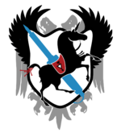

Main Page
(Redirected from Category:The Space)
| 57North Hacklab | |
|---|---|
|  | |
| Website | 57north.org.uk |
| Address | Units G&H, Kettock Lodge, Campus Two, Balgownie Drive, Bridge of Don, Aberdeen, AB22 8GU. |
| Telephone | +441224583491 (Currently down) |
| contact@57north.org.uk | |
| IRC | #57n at irc.57north.org.uk (Freenode) |
| Messanger | Search for '57 North Hacklab' on the Facebook messenger app |
| Status | View Status |
57North is a hacker collective with a shared space (known as the hacklab, hackspace, hackerspace, or simply just the space) located in Aberdeen, Scotland. We meet regularly to share knowledge, hack on projects together, and build community. If you're interested in joining 57North, come to some of our public meetings or join the 57North mailing list.
57North was born from the efforts of a group of like-minded people in Aberdeen. We have a range of electronics and computing tools available to our members that have been donated or loaned to us by members and local organisations.
Our current home is an office (Unit H) located upstairs at Kettock Lodge, Campus Two, Balgownie Drive, Bridge of Don, Aberdeen, AB22 8GU. Previously we were downstairs from Engage Gaming at 26 North Silver Street, AB10 1RL. We have some Photos if you'd like to see what it looks like.
We are a membership run organisation and our aims are based on providing a community owned space focused on technology and creativity as a social enterprise. We practise an asset lock, ensuring all income is invested in the betterment of our facilities for the benefit of the community. No members or directors receive an income or payment of any activities related to the organisation.
Our core aims are as follows:
- Our mission is to promote and and encourage technical, scientific and artistic skills and innovation through individual projects, collaboration and education, driven by a strong culture of self education.
- We aim to provide open events to allow the wider technical and creative communities in Aberdeen to meet, socialise, share ideas and facilitate collaboration.
- We actively promote and support the use, development and release of free and open technologies, data, standards, ideas, hardware and software for the benefit of all.
- We strive to provide a shared physical workspace, tools, storage, guidance and other resources for members and the wider community.
Our membership is made up of a diverse range of driven creatives from many backgrounds - software, electronic design, wood and metal work and more. In line with our organisational goals, we aim to foster a culture of technological literacy, creativity and agency.


NewsResourcesSocial Platforms |
Communication | |